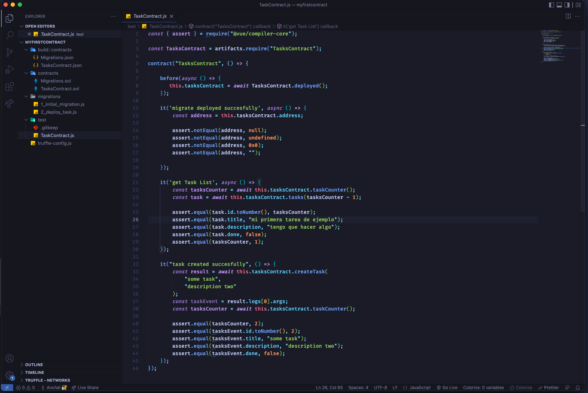
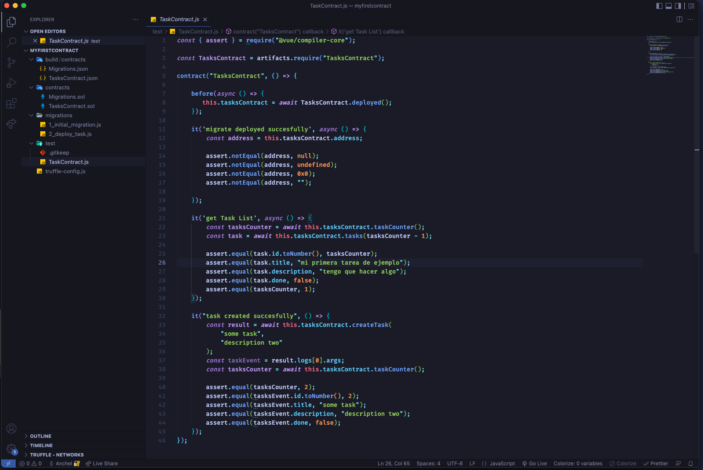

Programació Web
Una biblioteca de JavaScript para construir interfaces de usuario
Una biblioteca de JavaScript para construir interfaces de usuario
El nostre PR va sobre programació i Desenvolupament Web, la programació consisteix a donar instruccions a un ordinador perquè solucioni, un problema, creí un programa, creï una web, etc., tot això mitjançant algoritmes.
El Llenguatge de Marcat d'Hipertext (HTML) és el codi que s'utilitza per estructurar i desplegar una pàgina web i els continguts. Per exemple, els continguts podrien ser paràgrafs, una llista amb vinyetes, o imatges i taules de dades.
CSS (fulls d'estil en cascada) és un llenguatge que defineix l'aparença d'un document escrit en un llenguatge de marcatge (per exemple HTML). Així, als elements de la pàgina web creats amb HTML se'ls donarà l'aparença que es vulgui utilitzant CSS: colors, espais entre elements, lletra...,
Sass és un processador CSS. Un preprocessador CSS és una eina que ens permet generar, de manera automàtica, fulls d'estil, afegint-los característiques que no té CSS, i que són pròpies dels llenguatges de programació, com ara variables, funcions, selectors niats, herència, etcètera.
JavaScript és el llenguatge de programació que has d'usar per afegir característiques interactives al teu lloc web, (per exemple, jocs, esdeveniments que ocorren quan els botons són pressionats o les dades són introduïdes als formularis, efectes d'estil dinàmic, animació, i molt més).
![]() 

Resultat d'imatge de python El llenguatge de programació Python és àmpliament utilitzat per empreses de tot el món per construir aplicacions web, analitzar dades, automatitzar operacions i crear aplicacions empresarials fiables i escalables.
NPM és el gestor de paquets per a la plataforma JavaScript Node. Col·loca mòduls perquè el node els pugui trobar i gestiona els conflictes de dependència de manera intel·ligent. És extremadament configurable per suportar una gran varietat de casos d'ús. Amb més freqüència, s'utilitza per publicar, descobrir, instal·lar i desenvolupar programes de nodes.


Font Awesome és un conjunt d'icones molt utilitzat que us ofereix imatges vectorials escalables que es poden personalitzar amb CSS. Amb més de 1.600 icones al conjunt gratuït, hauríeu de poder trobar una icona que s'adapti a les vostres necessitats.
HTML (Lenguaje de Marcas de Hipertexto, del inglés HyperText Markup Language) es el componente más básico de la Web. Define el significado y la estructura del contenido web.


Avui dia, Git és, amb diferència, el sistema de control de versions modern més utilitzat del món. Git és un projecte de codi obert madur i amb un manteniment actiu que va desenvolupar originalment Linus Torvalds, el famós creador del nucli del sistema operatiu Linux, el 2005.
La branca de la programació que hem escollit és del Desenvolupament Web, és la branca més demandada del sector de la informàtica, dins del desenvolupament web tenim diferents seccions; nosaltres en concret hem estat treballant el frontend que és bàsicament la part visual d'una aplicació web, al frontend es treballa amb el disseny de la web i amb la interacció per exemple colors, mides, animacions, botons etc… Nosaltres hem fet servir per elaborar els nostres projectes HTML, CSS JavaScript que són llenguatges de programació per fer el frontend d'una aplicació web.
El backend és tota la part que la persona no veu es a dir tot el contrari del frontend, al backend es treballa amb el típic estereotip d'un hacker/programador amb una consola i moltíssimes línies de codi (verd o no) El desenvolupament backend es treballa en qualsevol app que puguis imaginar per exemple quan dones un m'agrada a una publicació de twiter o instagram hi ha centenars de línies de codi executant-se i molts processos en marxa perquè el teu m'agrada pugi a la base de dades d'Instagram i el traslladi al fronted perquè et vegis el cor pintant-se de vermell, tot això en qüestió d'un segon o menys, i tot això sol per posar un m'agrada imaginar-vos un procés molt més complex com comprar alguna cosa a Amazon qualsevol cosa amb què puguis interactuar fent clic té codi darrere i té backend darrere.
Ara mateix nosaltres vivim a l'era de la web 2 que és bàsicament com coneixem avui dia google.
Però com segurament sabreu ja està començant a cuinar-se la nova era de les
criptos tot pràcticament heu sentit el que és un bitcoin doncs tu quan fas
un pagament en bitcoin això es guarda en una cosa que es diu blockchain que és com si
fos una base de dades però totalment encriptada pública i que no es pot esborrar, per exemple una base de dades en fer la llista de la compra, tu poses vull comprar:
- Plàtans
- Llet
- Pernil
Però tu aquesta llista de la compra la pots esborrar, pots esborrar els plàtans el pernil i deixar només la llet a part no sabem ni qui ho vol comprar ni quan ni com ni amb què.
Això és una Base de dades, si la llista de la compra fos una base de dades digital, posaria el mateix a l'ordinador, però també ho podrien esborrar.
La Blockchain és una tecnologia que et fa aquesta llista de la compra, però no s'esborrés mai, mai de la vida, hi a més posa qui vol comprar el pernil, i amb quina moneda, a quina hora, a quin lloc.